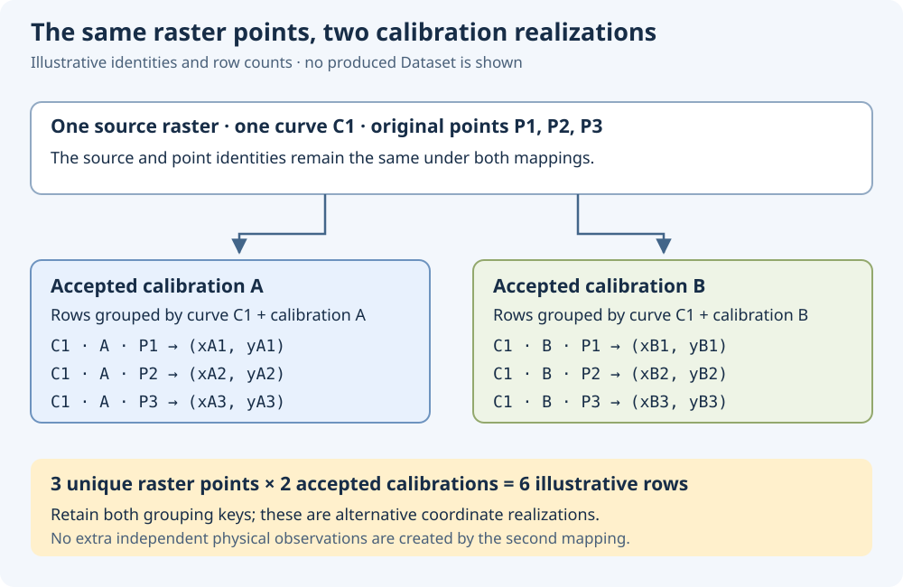
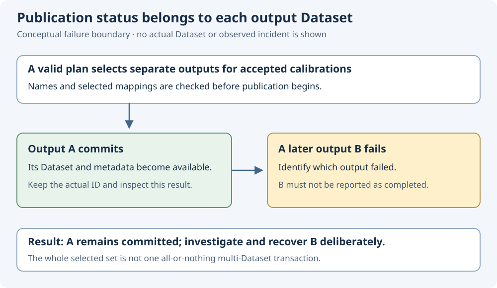

Curve Digitizer 2.0.9 · reference · review draft
Publish a result you can identify and interpret
A saved digitizing configuration preserves your work. A published Dataset gives other GX-TXT tools a scientific result with its own identity, units and provenance. Choose its curve and calibration organization deliberately.
Recognize the three work objects
| Object | What it preserves | How to interpret it |
|---|---|---|
| Source Image Dataset | The canonical raster and its registered source identity. | Calibration and original pixel locations refer to these exact image bytes. |
| Digitizer configuration | The source association, calibration measurements, curves, accepted points, notes and publication choices. | A named scientific work object saved with the Session. Its display name is distinct from its stable identity. |
| Published curve Dataset | Scientific coordinates, curve/point/calibration identities where applicable, units, semantic schema and provenance. | A result that compatible Dataset, Preview, plotting and fitting consumers can inspect through supported interfaces. |
A change to a configuration does not mean that an existing published Dataset has already been updated. Review the publication target and publish deliberately when the result should reflect new work. Deleting a configuration does not silently delete previously published Datasets.
Configuration notes can accompany publication as Dataset Notes. These readable notes complement structured scientific metadata; they do not replace curve grouping, axis units or source identity. Preserve any earlier published notes and report a notes-save failure separately from whether the scientific Dataset was published.
Active, accepted and selected have different meanings
The active calibration supplies the mapping used for the current view and verification. An accepted measurement is a valid calibration realization eligible for publication. The publication selection identifies which accepted measurement or measurements will produce output.
Selecting a row and activating its mapping are separate operations in the documented calibration workflow. Before interpreting a verification result, identify the active measurement. Before interpreting a published Dataset, identify the calibration chosen for that output.
Changing an active mapping recalculates scientific coordinates from the same original raster points. It does not move the raster observations. Renaming a measurement changes its readable label while retaining its stable identity. Two independently named realizations can have equal transform fingerprints.
Repeated calibration of the same raster explores the coordinate mapping procedure. It does not create independent physical measurements of the specimen or device.
Choose curve meaning and calibration layout separately
Independent curves are distinct curves without a shared numerical family parameter. A numerical family requires an actual numerical quantity that parameterizes the curves, with consistent units and meaning. Sharing an image, color palette or legend is insufficient by itself to establish a numerical family.
In either case, stable curve identity defines curve membership. A family value and an editable curve label do not replace the curve key. Point order remains an explicit property; an X coordinate alone is not a traversal index.
| Layout | Result organization | Consumer requirement |
|---|---|---|
| Separate | One output Dataset per selected calibration, with coordinates calculated from that mapping. | Ordinary compatible curve consumers can use each result while preserving curve grouping and point order. |
| Combined | One Dataset contains a realization of the original points for every selected calibration. | The consumer must retain calibration grouping as well as curve grouping. An unqualified X/Y reader may mix realizations. |

Inspect the actual output Dataset rather than inferring its organization from its name. Retain source, curve, point and calibration identities along with units. Keep the declared insertion or coordinate-ordering policy explicit; publication applies that policy in the selected calibration's scientific coordinates.
Combined output must satisfy the implemented scientific compatibility rules. In the deposited manual, enabled uncertainty with multiple combined calibration realizations is explicitly limited. Do not disable a necessary scientific model merely to force a preferred storage layout; choose a supported result and retain its limitations.
Read publication status one output at a time
Planned names and selected calibration mappings are validated before publication. The documented separate layout then commits each output Dataset individually. If a later output fails during publication, an earlier successfully committed Dataset remains available.

| Situation | What to establish | Recovery principle |
|---|---|---|
| Two planned output names collide. | Which calibration labels or template tokens produced the same target ID? | Review the generated names and use a naming plan that distinguishes the intended outputs before publishing. |
| An output ID belongs to another producer or configuration. | Which existing Dataset owns that identity? | Choose an appropriate distinct target. Preserve the existing scientific result. |
| A later separate output fails. | Which earlier outputs completed and which output failed? | Inspect retained results, correct the reported cause and deliberately review the next publication selection and naming plan. |
| Scientific publication completes but notes cannot be saved. | Which Dataset exists, and which descriptive notes update failed? | Keep the successful scientific result identifiable and repair the notes problem through the supported workflow. |
| The source is missing or its bytes changed. | Does the source still match the recorded Dataset identity and SHA-256? | Restore the verified original or create appropriate new work for the changed raster. Preserve existing configurations and outputs. |
Same-owner replacement is subject to the existing producer/configuration ownership rules. Review the actual target IDs before repeating a publication; a familiar label does not authorize overwriting another configuration's output.
After successful publication, select the actual output in Dataset tools and inspect the real Preview. Confirm curve/calibration grouping, axes and units, source information and point order before using the result downstream. Preserve the Session and verify reopening in the final real-GUI tutorial workflow.